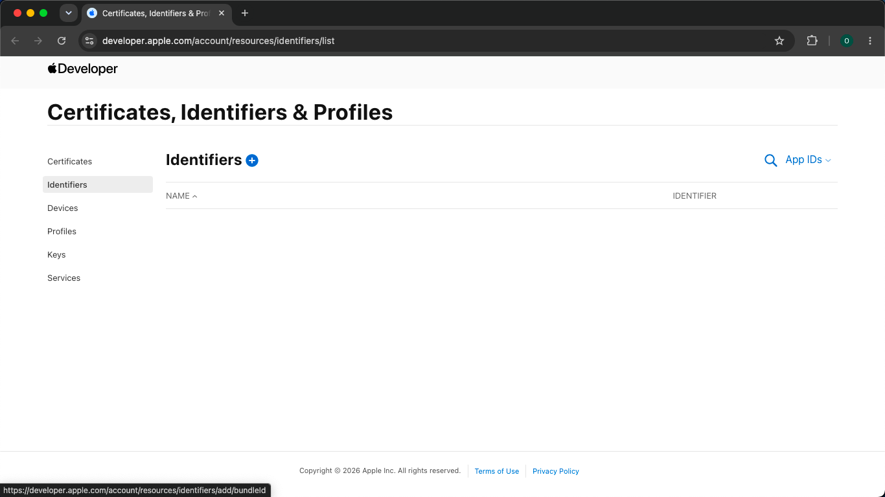
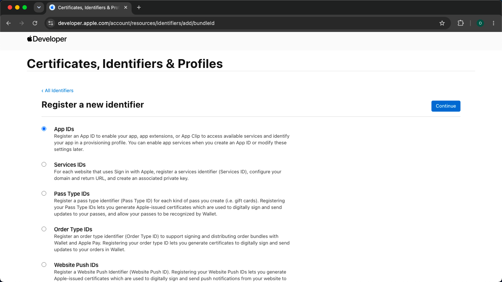
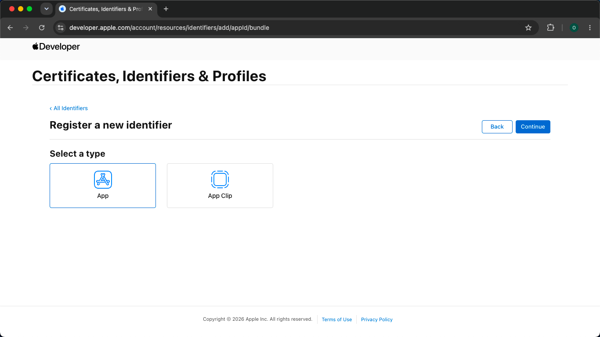
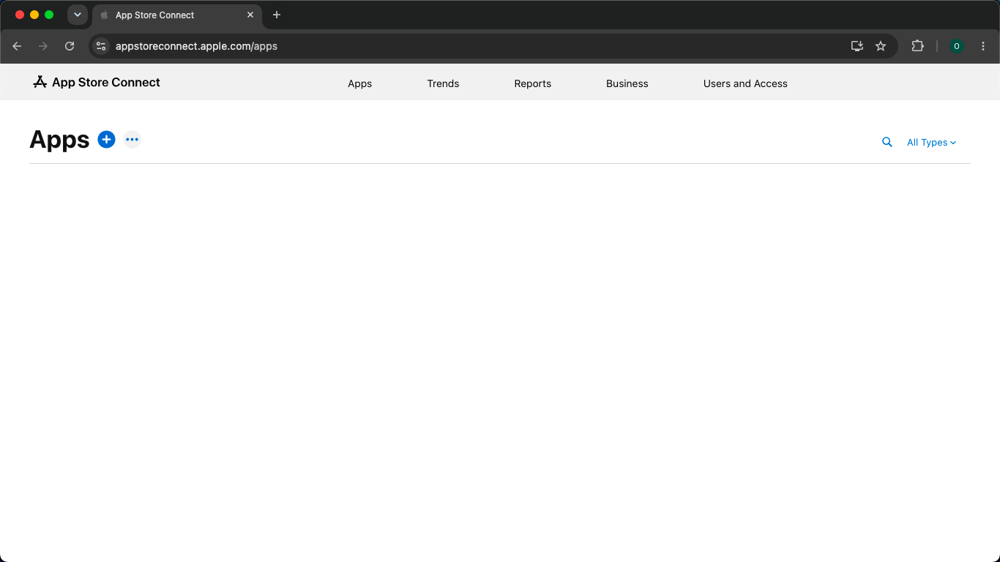
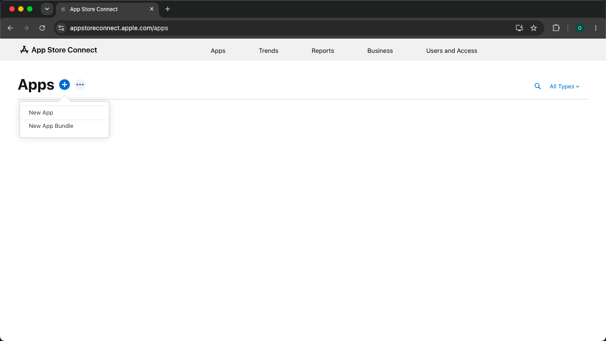
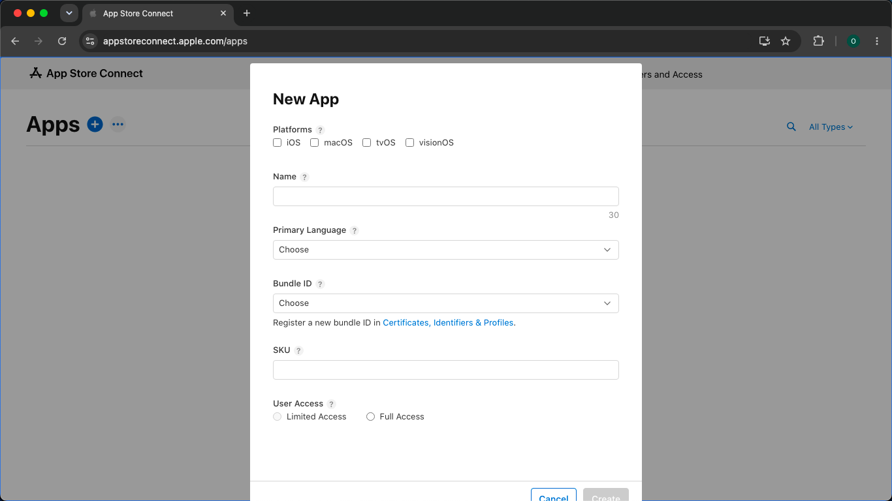
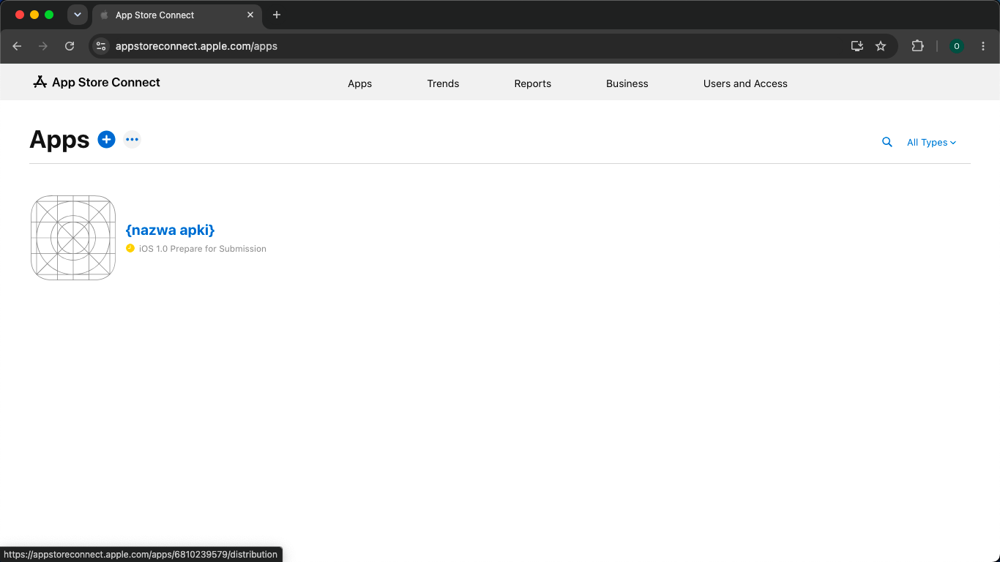
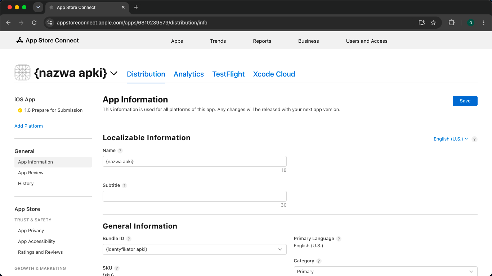

Apple Developer + App Store Connect
Nowa aplikacja iOS.
App Store Connect krok po kroku.
Zarejestruj identyfikator i utwórz miejsce dla swojej aplikacji w App Store Connect. Każdy etap pokazujemy na ekranie.
Zanim zaczniesz
Potrzebujesz konta z aktywnym członkostwem Apple Developer Program oraz uprawnień do rejestracji identyfikatora i tworzenia aplikacji. Jeśli pracujesz w zespole i brakuje Ci dostępu, poproś jego administratora.
Członkostwo kosztuje 99 USD za rok; cena w lokalnej walucie zależy od regionu i jest widoczna podczas rejestracji.
Otwórz Apple Developer

Rozpocznij rejestrację
Wybierz App IDs

Wybierz typ App

Nadaj identyfikator aplikacji
Teraz wybierz nazwę aplikacji i jej identyfikator. Przykładowe dane należą do fikcyjnej aplikacji. Wpisz własne wartości.
| Pole | Co wpisać lub wybrać |
|---|---|
| Description | Podaj nazwę swojej aplikacji, np. Testowa Apka, bez niedozwolonych znaków specjalnych. To wewnętrzny opis identyfikatora. |
| Bundle ID - typ | Explicit |
| Bundle ID | Wpisz {prefiks}.{nazwa-techniczna}, np. pl.jankowalski.testowaapka. Zastąp obie części własnymi wartościami. Nie używaj podkreśleń. |
Prefiks to zwykle domena zapisana od końca, np. jankowalski.pl daje pl.jankowalski. Jeśli nie masz domeny, wybierz stabilny prefiks oparty na swojej nazwie dewelopera. Nazwę techniczną zapisz małymi literami, bez spacji i polskich znaków: „Testowa Apka” daje testowaapka. Po połączeniu otrzymasz pl.jankowalski.testowaapka.
Bundle ID dopuszcza litery ASCII, cyfry, kropki i myślniki. Nie używaj podkreśleń. Zasady Bundle ID.
Dla podstawowej rejestracji pozostaw dodatkowe Capabilities niezaznaczone. Kliknij Continue.

Potwierdź i zarejestruj

Przejdź do App Store Connect

Otwórz menu dodawania

Wybierz New App
Wypełnij formularz i kliknij Create
| Pole | Co wpisać lub wybrać |
|---|---|
| Platforms | Zaznacz iOS. |
| Name | Podaj nazwę swojej aplikacji, np. Testowa Apka, od 2 do 30 znaków. |
| Primary Language | Wybierz podstawowy język informacji o aplikacji w sklepie. |
| Bundle ID | Wybierz dokładnie ten identyfikator, który zarejestrowano w kroku 6, np. pl.jankowalski.testowaapka. |
| SKU | Podaj unikalną na swoim koncie nazwę techniczną, np. testowa_apka. SKU służy do wewnętrznej identyfikacji i nie jest widoczne dla klientów. Użyj liter i cyfr; myślniki, kropki i podkreślenia też są dozwolone, ale nie na początku. |
| User Access | Full Access: dostęp dla wszystkich uprawnionych użytkowników zespołu. Limited Access: dostęp ograniczony do wybranych użytkowników; role administracyjne mogą nadal mieć dostęp. |
Sprawdź wszystkie wartości i kliknij Create. SKU nie można później zmienić. Bundle ID musi być zgodny z przyszłym projektem aplikacji; po przesłaniu pierwszego buildu nie można zmienić go w tym rekordzie. Źródło: pola aplikacji Apple.

Sprawdź utworzoną aplikację


Gotowe
Twoja aplikacja ma już swój rekord.
Zachowaj nazwę, Bundle ID, SKU i wybrany język. To dane, do których wrócisz przy konfiguracji projektu. Status Prepare for Submission oznacza etap przygotowania do zgłoszenia, a nie publikację.
Kolejne, osobne części: 02 / TestFlight oraz 03 / Praca przez kabel.
Przejdź z asystentem
Jeden krok na wiadomość.
Skopiuj prompt do nowej rozmowy z asystentem AI. Zapyta o nazwę aplikacji, pomoże dobrać identyfikatory i poprowadzi Cię przez ten sam proces na podstawie Twoich odpowiedzi i screenshotów.
Pokaż pełny prompt
Materiały źródłowe do tej serii: 1. Nowa aplikacja: https://aleksanderfigiel.pl/ios-new-app-tutorial-1 2. TestFlight: https://aleksanderfigiel.pl/ios-testflight-tutorial-2 3. Instalacja przez kabel: https://aleksanderfigiel.pl/ios-macos-cable-tutorial-3 Przed rozpoczęciem otwórz i przeczytaj stronę części, której dotyczy ten prompt. Korzystaj z jej instrukcji, ilustracji i kodu. Pozostałe części traktuj jako kontekst i sięgaj do nich, gdy wymaga tego bieżący krok. Zachowaj zakres tej części i prowadź mnie po jednym kroku. Jeśli nie masz dostępu do strony lub nie została jeszcze opublikowana, powiedz o tym i poproś o jej treść albo pliki; nie udawaj, że ją przeczytałeś. Poprowadź mnie po polsku przez utworzenie nowej aplikacji iOS w Apple Developer i App Store Connect. Zakres kończy się na zarejestrowanym App ID oraz nowym rekordzie aplikacji ze sprawdzonymi danymi. Nie obejmuje pisania kodu, TestFlight, certyfikatów, profili provisioning, GitHub Actions, instalacji przez kabel ani publikacji w App Store. Zacznij od sprawdzenia aktywnego członkostwa Apple Developer Program i dostępu do rejestracji. Następnie otwórz portal i prowadź krok po kroku. Nie zbieraj całego zestawu danych przed rozpoczęciem. Dopiero przy formularzu App ID (krok 5) zapytaj o nazwę aplikacji i używaną domenę lub prefiks organizacji. Bez domeny pomóż wybrać stabilny prefiks oparty na własnej nazwie dewelopera. Zaproponuj Description i Bundle ID, poczekaj na akceptację. Bundle ID: prefiks + kropka + nazwa techniczna, litery ASCII, cyfry, kropki i myślniki, bez podkreśleń, spacji i polskich znaków. Description to wewnętrzny opis identyfikatora. Dopiero przy New App (krok 10) uzgodnij Name (2-30 znaków), SKU, Primary Language i User Access. SKU ma być unikalne na koncie, zaczynać się literą lub cyfrą; może zawierać myślniki, kropki i podkreślenia. Przykład: Name „Testowa Apka”, Bundle ID „pl.jankowalski.testowaapka”, SKU „testowa_apka”. Przykładu nie przypisuj użytkownikowi. Nie deklaruj dostępności nazwy lub identyfikatora, zanim potwierdzi ją portal. Zapisuj w kontekście wartości zaakceptowane i rzeczywiście zarejestrowane przez użytkownika. Jeśli użytkownik wybierze inne, stosuj je konsekwentnie. Nie deklaruj dostępności nazwy lub Bundle ID, zanim potwierdzi ją portal Apple. Sprawdź, czy użytkownik ma aktywne członkostwo Apple Developer Program oraz dostęp do tworzenia aplikacji. Jeśli nie, wyjaśnij wymaganie i skieruj do https://developer.apple.com/programs/enroll/ . Nie zakładaj, że ma firmowe konto lub dostęp administratora. Jeżeli ma już aplikację, ustal czy naprawdę tworzy osobny rekord, czy tylko odtwarza kroki na istniejącym. Nie każ tworzyć duplikatów ani kasować istniejących aplikacji. Pracuj po jednym ekranie lub małym kroku na wiadomość. Podawaj numer, cel, dokładne nazwy przycisków i konkretne wartości do wklejenia. Po każdym kroku czekaj na potwierdzenie albo screenshot. Nie wypisuj od razu całego tutorialu. Na screenshotach sprawdzaj rzeczywisty ekran i komunikaty; nie zakładaj powodzenia. Jeśli dane są zamazane lub zastąpione placeholderami, poproś użytkownika o samodzielne sprawdzenie wartości, nie żądaj ujawnienia danych osobistych. Nie proś o hasło, kod 2FA, klucze ani certyfikaty. Nie używaj znaku em dash. Przebieg: 1. Otwórz https://developer.apple.com/account/resources/identifiers/list i zaloguj się do właściwego zespołu. 2. Kliknij + przy Identifiers. 3. Wybierz App IDs i Continue. 4. Wybierz App i Continue. 5. Wpisz ustalone Description i Bundle ID, zaznacz Explicit. Dla podstawowej rejestracji nie włączaj dodatkowych Capabilities. Jeśli użytkownik pyta o konkretną funkcję, wyjaśnij ją bez zgadywania wymagań aplikacji. Nie myl uprawnień aparatu z capabilities. 6. Sprawdź podsumowanie, kliknij Register i potwierdź obecność identyfikatora na liście. 7. Otwórz https://appstoreconnect.apple.com/apps na tym samym koncie i w tym samym zespole. 8. Kliknij + przy Apps. 9. Wybierz New App. 10. W formularzu zaznacz iOS, wpisz ustaloną nazwę, wybierz wcześniej zarejestrowany Bundle ID i wpisz SKU. Przed wyborem Primary Language zapytaj, jaki ma być podstawowy język informacji sklepowych. Przed wyborem User Access ustal, czy aplikację mają widzieć wszyscy uprawnieni członkowie zespołu, czy tylko wybrani; wyjaśnij Full Access i Limited Access. To dostęp zespołu, nie publiczna dostępność aplikacji. Sprawdź dane przed Create; wyjaśnij, że SKU nie można później zmienić. Po Create poproś o ekran wyniku. 11. Otwórz aplikację, następnie General > App Information. Sprawdź nazwę, Bundle ID, SKU i Primary Language. Bundle ID musi być potem taki sam w kodzie; po przesłaniu pierwszego buildu nie można zmienić go w tym rekordzie. Jeśli użytkownik zmienił edytowalne pola, przypomnij o Save. W razie błędu zajętej nazwy albo identyfikatora zaproponuj wariant i poczekaj na wybór. Gdy Bundle ID nie ma na liście, sprawdź konto, zespół, rejestrację i ewentualne przypisanie do istniejącej aplikacji; dopiero potem odśwież formularz. Brak przycisku tworzenia może wymagać sprawdzenia roli lub umów konta. Nie usuwaj niczego jako obejścia. Korzystaj z aktualnych oficjalnych instrukcji Apple, jeśli masz przeglądanie internetu: https://developer.apple.com/help/account/identifiers/register-an-app-id/ https://developer.apple.com/help/app-store-connect/create-an-app-record/add-a-new-app/ https://developer.apple.com/help/app-store-connect/reference/app-information/app-information/ Jeżeli interfejs się różni, kieruj się screenshotem i dokumentacją. Jeśli nie masz dostępu do internetu, powiedz o tym przy rozbieżności zamiast udawać weryfikację. Zakończ tabelą rzeczywiście ustalonych danych oraz informacją: utworzono identyfikator i rekord aplikacji; aplikacja nie jest jeszcze opublikowana. Wskaż osobne kolejne tematy: TestFlight i instalacja przez kabel, ale nie zaczynaj ich bez prośby. Nie generuj stron ani PDF podczas prowadzenia użytkownika, chyba że o to poprosi.
Źródła i pomoc
Instrukcja opiera się na przejściu przez portal i dokumentacji Apple sprawdzonej 9 września 2026.
- Apple: rejestracja App ID
- Apple: utworzenie nowej aplikacji
- Apple: znaczenie i ograniczenia pól aplikacji
Jeśli coś nie działa
Nazwa lub Bundle ID są zajęte: wybierz własny wariant i stosuj go konsekwentnie. Brakuje Bundle ID na liście: sprawdź konto, zespół i rejestrację identyfikatora; sprawdź też, czy nie jest już powiązany z inną aplikacją. Nie możesz utworzyć rekordu: sprawdź rolę użytkownika i komunikaty o wymaganych umowach konta.